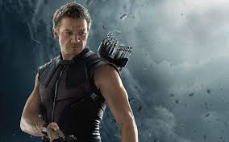

Biography
Identity: Clint Barton Gender: Male height: 6'3" Weight: 230lbs. Place of orgin: Waverly ,lowa Education: High school (unfinished) powers: Hand-to-Hand Combat Superior Marksmanship GROUP AFFILIATION: Avengers West Coast Denfenders
Golden Archer
Very little is known about the S.H.I.E.L.D. agent known as Hawkeye or his origins. An accomplished combatant and weapons master, he was present for Thor’s arrival on Earth, and was impressed with the God of Thunder. He was also instrumental in bringing over Natasha Romanoff, AKA Black Widow, to the side of S.H.I.E.L.D, sparing her life and offering her a path to redemption.
For his extraordinary abilities, he was recruited by Nick Fury to be part of the Avengers Initiative. Unfortunately, in his first mission with the Avengers, he initially worked against them, thanks his mind being controlled by Loki, the Asgardian God of Mischief. After being broken free, however, the horrified Clint did work alongside his fellow Super Heroes to bring down the trickster god.
Since then, he has managed to put his talents to good use against the Chitauri, Ultron, HYDRA, and even his fellow Avengers when it seemed necessary.
Sniper Mentality
As one of S.H.I.E.L.D.’s best agents, the World’s greatest marksman, and an Avenger, Hawkeye uses traditional weapons as well as high-tech ones, with a strong affinity for his archery bows. Few humans on the planet compare to Clint Barton when it comes to his astonishing talents in precise marksmanship, fighting, flying, and tactical prowess
An expert acrobat, military-trained combatant, and master assassin, Barton can stand toe-to-toe with some of the best fighters around. He is also a master tactician and spy—the Avengers face quite a bit of difficulty when Hawkeye works for Loki and turns his plans against them
Hawkeye’s specialized equipment include recurve bows, compound bows, a specialized arrow quiver, speed loader, Busse dagger, a S.H.I.E.L.D.-issued handgun, and collapsible baton
Target Acquired
Plenty of people wind up on the wrong end of Barton’s arrows, especially based on the direct orders of S.H.I.E.L.D.
As he is part of the Avengers Initiative, his enemies are the ones that threaten this group and Earth. He faces the likes of the Chitauri, HYDRA, Ultron and his robotic sentries, Ulysses Klaue, in his bid to keep the world safe. Hawkeye even battles his fellow heroes when they stand in the way of Captain America and the Winter Soldier getting to Siberia, when the Avengers split over the Sokovia Accords.
His most notable enemy, however, is Loki. With his strong sense of morality, Clint suffers at the thought of having worked against S.H.I.E.L.D. and his fellow agents, mourning the losses at his hand. He blames Loki for this violation, and the Asgardian prince has earned Barton’s eternal enmity.
Friends in High Places
As an agent of S.H.I.E.L.D., Clint Barton is allied with many in this organization. He respects and takes orders from Nick Fury (unless they contradict his own sense of what is right) and supports colleagues like Maria Hill and Phil Coulson.
His closest friendship is with Natasha Romanoff, AKA Black Widow, who he recruits for S.H.I.E.L.D. They often work together on missions and have a strong rapport. Natasha has been known to wear an arrow necklace in honor of her friend, and even bargains for his release when he is under Loki’s control. He cannot bring himself to fight her properly when they are on opposing sides of the Sokovia Accord dispute. She is also the only agent apart from Nick Fury that he entrusts with knowledge of his family (until he brings the Avengers to his compound). When Director Fury put the Avengers initiative in place, Barton fights alongside the likes of Iron Man, Hulk, Captain America, Thor, and eventually, Ant-Man, Vision, Falcon, War Machine and other heroes. He forms a close bond with the Maximoff twins, acting as a mentor when they switch sides to face against Ultron. He mentors Scarlet Witch, encouraging her to face her fears and become and Avenger. Pietro Maximoff, AKA Quicksilver, even gives his life to save Hawkeye.
Most important to him, however, are his wife Laura and kids Cooper, Lila and Nathaniel (whose middle name “Pietro” reflects the hero’s sacrifice).
An Agent’s File
S.H.I.E.L.D. agent Clint Barton has kept his past and private life a secret, like any good spy. Known only to his closest confidantes, he is married to Laura Barton and together, the couple have three children, Cooper, Lila and Nathaniel. When not globe-trotting on missions, he lives with his family on the homestead that Director Nick Fury helped establish for them in secret.
Dubbed Hawkeye, Barton has used his beyond expert-level marksman skills to remove S.H.I.E.L.D.’s enemies from the board; however, he has been known to make his own moral judgment calls in the field. In one case, Fury sent Barton to kill the Russian assassin codenamed Black Widow. Instead, he offered to bring Natasha Romanoff over to their side and the two not only became not only faithful allies, but also good friends.
Barton had his first encounter with the growing super community while tasked with guarding the site near Puente Antiguo, New Mexico where an enchanted and powerful alien war-hammer landed. After Agent Phil Coulson reported its existence to Fury, S.H.I.E.L.D. put up a facility around it. When the Asgardian god of thunder Thor showed up one night to regain his erstwhile companion, Coulson ordered Barton to be their eyes up high. When Thor failed to lift the weapon, Barton stood down.
Hawkeye had another run-in with another Asgardian a year later at the S.H.I.E.L.D. Joint Dark Energy Mission Facility, while guarding the Tesseract and the experiments surrounding the weapon, led by Dr. Erik Selvig. When the Tesseract suddenly opened a portal, like Hawkeye had predicted, Thor’s brother Loki emerged. He attacked the base and controlled the minds of Dr. Selvig and Barton with his scepter.
Under Loki’s control, Barton stole the Tesseract and helped Loki and Selvig escape, nearly killing Director Fury and Agent Hill in the process. As Loki’s acting commander, Barton traveled to Stuttgart, Germany, with Loki to secure a supply of iridium to stabilize the Tesseract.
Testing the Avengers Initiative, Barton led a group of mercenaries to attack Fury’s team, while Loki allowed himself to be captured as part of his plan to unleash the Hulk and use the Tesseract to bring about war on Earth. Romanoff was able to get the drop on Barton; knocking her friend unconscious and so breaking Loki’s hold on him, restoring his mind. Guilt-ridden for the S.H.I.E.L.D. agents he harmed, Barton joined Captain America and Widow on their mission to prevent Loki from using Selvig’s Tesseract device in New York City.
Piloting the Quinjet, Hawkeye and the other heroes saw the Tesseract used to open a portal above the city, allowing alien Chitauri soldiers through the sky. Assembling alongside Captain America, Black Widow, Iron Man, Thor, and the Hulk, Hawkeye fought the oncoming Chitauri warriors with his military combat skills and weaponized arrows. Closing the portal, the Avengers were able to stop the alien invasion on New York City and detain Loki. With Thor returning Loki and the Tessearct to Asgard, the team went their separate ways.
Three years later, with the threat of HYDRA on the rise, the Avengers were called upon to assemble once more to retrieve Loki’s Scepter from Baron Wolfgang von Strucker’s HYDRA base in Sokovia. Unable to contend with an enhanced Pietro Maximoff’s distracting speed, Hawkeye was blasted by a HYDRA agent. With the mission a success, Hawkeye and the group returned to Avengers Tower where Dr. Helen Cho used her Regeneration Cradle to patch him up.
At the Avengers Tower, the sentient Ultron, in a malfunctioning Iron Legion drone, introduced himself as a creation of Tony Stark to bring about peace. Before dispatching an army of Ultron Sentries, Ultron revealed his plans of peace by way of the extinction of the Avengers, which he saw a danger to the world.
Traveling to the coast of Johannesburg, the divisive Avengers discovered Ultron had murdered von Strucker and intended to secure the Wakandan metal Vibranium from Ulysses Klaue. While Thor, Iron Man, and Captain America faced Ultron head-on, Hawkeye and Black Widow confronted Ultron’s agents from Sokovia: the enhanced man, Quicksilver, and his twin sister Wanda Maximoff, Scarlet Witch, who displayed telekinetic and telepathic abilities. Barton discovered Scarlet Witch mind-punched the team with terrible visions, inducing Hulk into a rage. He was able to avoid this fate, however, and disabled Scarlet Witch.
Following the destruction, and backlash, of the battle between Iron Man and the rampaging Hulk in the South African town, and the team recovering from Scarlet Witch’s visions, Hawkeye flew the Avengers to a safehouse—his secret homestead—where they met Barton’s pregnant wife and children. In private, Laura expressed her concern for her husband if he remained in the Avengers, not because he was inferior nor enhanced like the others, but that the team was a mess and would not support him, to which Barton retorted they were his mess.
With new intel from Fury, the Avengers prepared their next move, which Barton promised his wife would be his final mission with the team. Heading to Seoul, they discovered Ultron and the Maximoff twins planned for Dr. Cho to build Ultron a new body made of Vibranium and the Mind Stone, which was housed in Loki’s Scepter, using the Cradle. Before Ultron’s consciousness was transferred into the body, Hawkeye managed to intercept the Cradle and secure the vessel at Avengers Tower, though he was distraught that Romanoff had been captured by the Super Villain in the process.
While Stark and Banner secretly worked to bring the Cradle creation to life, Barton focused on locating Romanoff. Captain America and the recently defected Scarlet Witch and Quicksilver reacted negatively to Stark and Banner’s plan to upload JARVIS to the Cradle body. The arguments ceased when Thor arrived and used his lightning to activate the machine. The newly created being—who called itself Vision—shocked the team when he lifted Thor’s Mjolnir as proof of his honor and desire to stop Ultron.
With no time to lose, the Avengers flew to Sokovia to evacuate the civilians, rescue Black Widow, and stop Ultron once and for all. As Ultron unleashed an army of sentries, before using a device to send the entire city floating off ground, Hawkeye and the Avengers engaged Ultron’s army while protecting the city. Amidst the battle, Hawkeye saved Wanda who was suffering from a panic attack, while giving her the option to stay inside and safe, or to exit the building to fight, as an Avenger. Emboldened, Scarlet Witch emerged and helped Hawkeye clear their area before the entire team converged on the old church to protect the core.
With Ultron on the defensive, the team succeeded in holding off wave after wave of sentries and protecting the device’s key. As Hawkeye and Widow were ushering civilians onto S.H.I.E.L.D. lifeboats nearby, Ultron unleashed a barrage of bullets at Hawkeye from his own Quinjet. Shielding a young child and discovering no bullets had struck them, Barton turned to see a fatally-wounded Pietro, who had taken every one of the bullets for him.
Following the events of Sokovia and destroying Ultron, Barton returned home as promised and retired from the Avengers. The Bartons named their newborn son Nathaniel Pietro Barton after Quicksilver and Romanoff.
He was out of the game when Captain America lead a mission to Lagos, resulting in Scarlet Witch accidentally killing civilians in a nearby building. When asked how he felt about the Sokovia Accords, which put the Avengers under the oversight of the United Nations, Black Widow replied that Barton was retired. However, heroes like Hawkeye always seem to show up when needed.
Captain America called upon Barton when he was in need of help—against Iron Man and his team who supported the Sokovia Accords. Traveling to the New Avengers Facility, Barton tried to retrieve Scarlet Witch who was kept there by Vision, at the request of Tony Stark. The two then went on to recruit Scott Lang, AKA Ant-Man, and met up with Rogers, Wilson and Barnes in Berlin. Eager to repay the debt he owed Maximoff, Barton agreed to aid Rogers in his mission to stop the Winter Soldiers, HYDRA’s elite group of assassins, under the control of Helmut Zemo.
Making their way to Flughafen Leipzig-Halle Airport, intending to depart to Siberia, Captain America and his team were surrounded by Iron Man’s team. Hawkeye stood alongside Captain America prepared to fight their former teammates and friends. With the odds against the entire team making the trip to Siberia, they devised a plan for Captain America and the Winter Soldier to make it to Siberia. Following the clash at the airport, Barton, Maximoff, Lang, and Wilson were captured and imprisoned at the Raft, an underwater prison.
Captain America infiltrated the Raft and freed his allies, including Hawkeye. Barton and Lang signed the Accords and made a deal with the government to return home under house arrest instead of returning to the Raft.